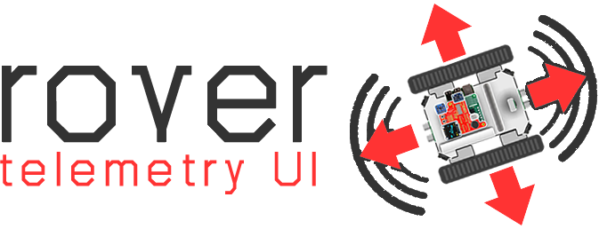
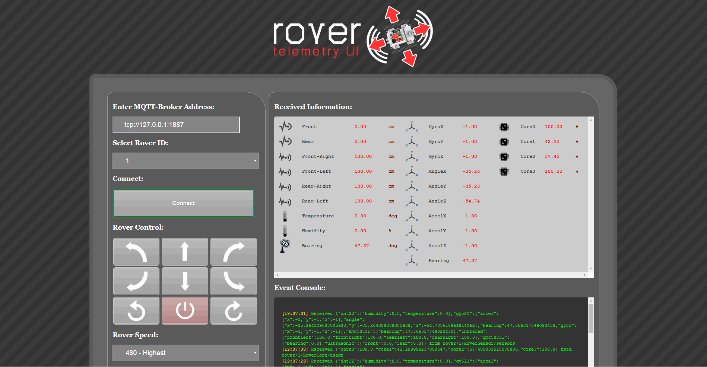

Rover Telemetry UI: MQTT Client UI for Rover¶
{kind=link}
Description¶
Rover Telemetry UI (rover-telemetry-ui) is designed to communicate with multi-agent rovers using MQTT protocol over cloud. It is built with node.js as a web application and it is used for reactive MQTT communication. Rover Telemery UI is shown below:
{kind=link}
Operation¶
Upon connection, rover-telemetry-ui subscribes to topic rover/<roverID>/telemetry, which is redirected from telemetry topic on the Eclipse Hono side.
{kind=link}
telemetry topic retrieves sensor and core usage information in following format:
1 2 3 4 5 6 7 8 9 10 11 12 13 14 15 16 17 18 19 20 21 22 23 24 25 26 27 28 29 30 31 32 33 34 35 36 37 38 | {
"gy521":{
"accel":{
"x":-1,
"y":-1,
"z":-1
},
"angle":{
"x":-35.264389038085938,
"y":-35.264389038085938,
"z":-54.735610961914062
},
"gyro":{
"x":-1,
"y":-1,
"z":-1
}
},
"hmc5883l":{
"bearing":47.366317749023438
},
"infrared":{
"frontleft":100.0,
"frontright":100.0,
"rearleft":100.0,
"rearright":100.0
},
"ultrasonic":{
"front":0.0,
"rear":0.0
},
"cores":{
"core0":55.099998474121094,
"core1":100.0,
"core2":100.0,
"core3":18.899999618530273
}
}
|
If connected, driving buttons can be used to send telemetry data to rover. This message is published to rover/<roverID>/RoverDriving/control topic in the following format:
1 2 3 4 5 | {
"mode":<int mode>,
"command":<char command>,
"speed":<int speed>
}
|
"speed" entry is an integer value between 360 (lowest speed) and 480 (highest speed) for the rover.
"command" entry indicates many integrated functions, such as the ones listed below:
F → Stop Movement
Q → Go Forward-Left
W → Go Forward
E → Go Forward-Right
A → Go Backward-Left
S → Go Backward
D → Go Backward-Right
J → Turn Left On Spot
K → Turn Right On Spot
R → Shutdown Rover
In rover-telemetry-ui only "mode":0 is supported, which indicated manual driving.
Using rover-telemetry-ui¶
Note
Project is hosted in the repository: https://github.com/app4mc-rover/rover-telemetry-ui.git.
To download:
1 | git clone https://github.com/app4mc-rover/rover-telemetry-ui.git
|
To download dependencies (If you don’t have node.js installed, first install node.js):
1 2 | cd rover-telemetry-ui
sudo npm install net connect serve-static http socket.io express path mqtt
|
To run the server:
1 2 | cd scripts/
sudo node start_rovertelemetryui.js
|
Finally, go to your web browser and find the page at http://<your host address>:5055/rovertelemetryui.html.